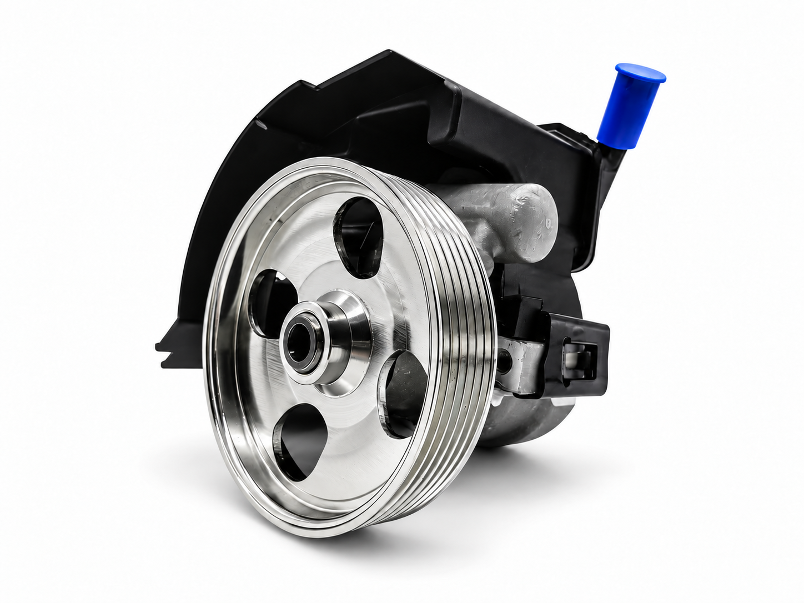
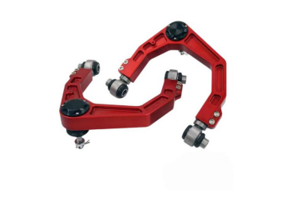
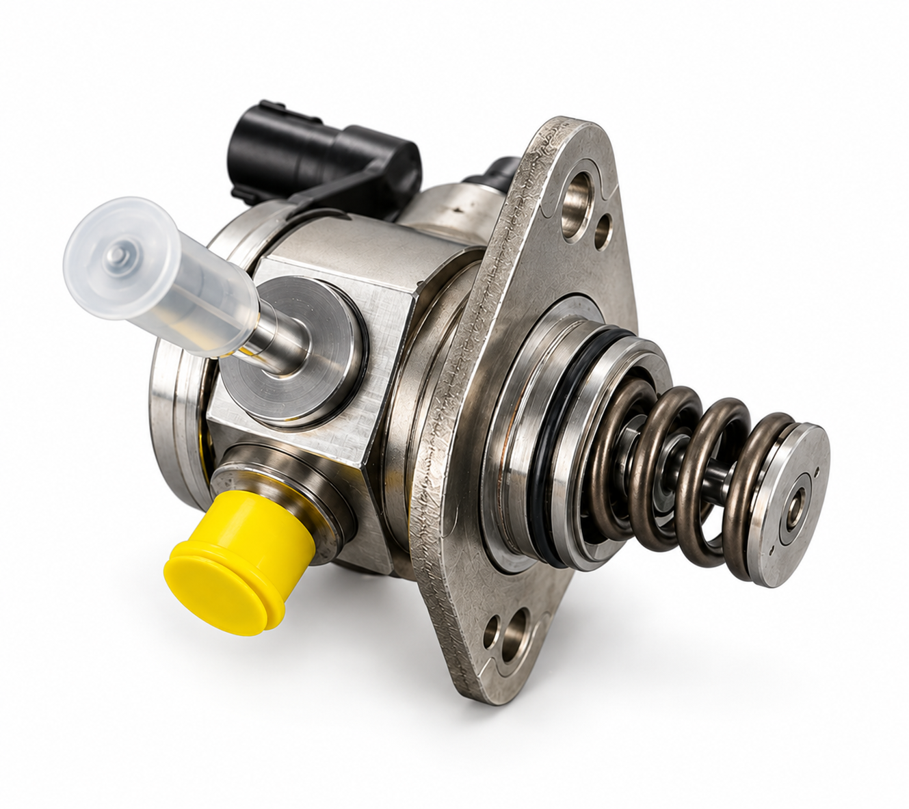
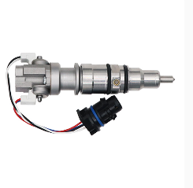
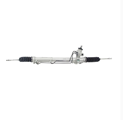
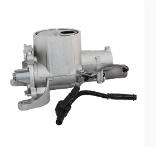

Quality Control
Every AMAZE part is 100% tested before shipment.
AMAZE AUTO PARTS provides quality steering, suspension and engine-system components for distributors and wholesalers worldwide.
Drawing on over 20 years of manufacturing experience, AMAZE AUTO PARTS offers premium components across steering, suspension and engine systems. Our quality system is IATF 16949 certified, with rigorous specifications and control applied to every AMAZE product.
Every part carrying the AMAZE name is 100% tested before shipment - not sample-tested only, but every single part. With three decades of foundry and machining expertise, our quality is trusted by distributors and wholesalers across Europe, the Middle East, Southeast Asia, the Americas and Africa.
Beyond the parts, our in-house export desk manages documentation, customs clearance and container consolidation, providing one delivery, one invoice and one point of contact from quote to arrival. AMAZE serves the global aftermarket and can support OES and OEM projects on request.
Select a category to learn more and send us your requirement directly through WhatsApp.

Reliable steering pump solutions for aftermarket supply.

Suspension components for replacement and 4WD applications.

Fuel-system components for modern automotive applications.

Injector solutions and related components for the aftermarket.

Steering rack solutions for distributor and workshop needs.

Engine lubrication components for dependable operation.
Every AMAZE part is 100% tested before shipment.
Documentation, customs clearance and consolidation managed in-house.
Global aftermarket supply with OES and OEM project support on request.